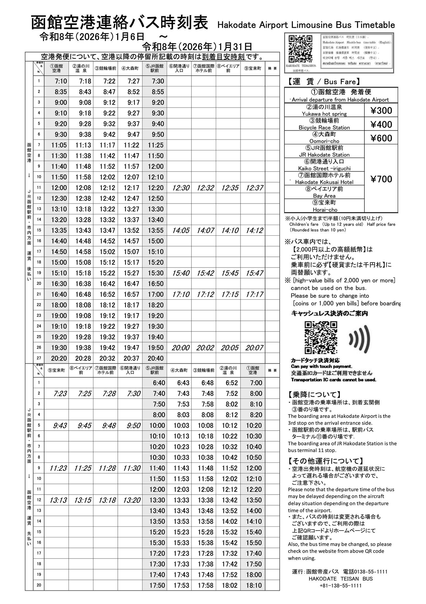

🇯🇵 北海道 2026
2026.01.19 - 2026.01.29
航班
D1 出發
D2 余市
D3 採買
D4 滑雪 I
D5 滑雪 II
D6 函館 I
D7 函館 II
D8 滑雪 II
D9 滑雪 II
D10 滑雪 II
D11 滑雪 II
清單
航班資訊
Visit Japan Web
札幌 (CTS)
✈️ 去程 (TPE-CTS)
酷航 TR892 12:30
抵達時間
17:20
機場航廈
1
訂單編號
CHG1HB
艙位等級
ScootPlus
✈️ 飛機動態
ℹ️ 搭機事項
🏠 回程 (CTS-TPE)
酷航 TR893 18:40
爸爸媽媽
三小孩
抵達時間
22:20
機場航廈
International
訂單編號
J6HLRV
LD2Z9A
艙位等級
ScootPlus
Basic
✈️ 飛機動態
ℹ️ 搭機事項
函館 (HKD)
✈️ 去程 (CTS-HKD)
ANA NH4857 17:55
抵達時間
18:35
機場航廈
D
訂單編號
FHOEW5
艙位等級
經濟艙
✈️ 飛機動態
ℹ️ 搭機事項
🏠 回程 (HKD-CTS)
ANA NH4858 19:05
抵達時間
19:45
機場航廈
D
訂單編號
FHOEW5
艙位等級
經濟艙
✈️ 飛機動態
ℹ️ 搭機事項
Day 1 (一) 出發
09:08
桃園客運 🚍
📍 出發：桃園火車站 (後站)
🏁 抵達：桃園機場第一航廈
⏱️ 車程：約 40 分鐘
💰 票價：$37 (可刷悠遊卡)
🔍 客運即時動態
請提早 10 分鐘候車
09:40
桃園機場 → 新千歲 ✈️
點擊查看航班資訊
17:20
抵達新千歲機場 🗺️
點擊查看機場地圖
19:50
搭乘北海道 JR 🚆
前往小樽方向 (快速 Airport 號)
前往小樽方向 (快速 Airport 號)
前往小樽方向 (快速 Airport 號)
點擊查看車種資訊
21:15
抵達南小樽站
步行約 8 分鐘至飯店
22:00
Stay's OTARU 🏨
📍 北海道小樽市住吉町 (導航)
📅 入住：2026/XX/XX (一)
⚠️ 注意：全館禁煙，晚上10點後請降低音量
🆘 緊急聯絡
🔑 自助入住
點擊查看入住詳情
Day 2 (二) 余市-小樽
07:XX
南小樽 → 余市 🚃
Option 1
07:13 發 - 07:45 着 (¥XXX)
JR 函館本線 (往然別)
Option 2
07:55 發 - 08:30 着 (¥XXX)
JR 函館本線 (往俱知安)
🗺️ Google Map 路線資訊
點擊查看 3 班列車資訊
09:30
余市蒸餾所 🥃
📅 導覽時間：10:00 - 11:00
🔢 預約編號：#20260101
⚠️ 需提早 15 分鐘報到
🌐 官方網站
已預約導覽
12:XX
余市 → 小樽 🚃
Option 1
12:15 發 - 12:42 着
JR 函館本線 (往小樽)
Option 2
12:55 發 - 13:25 着
JR 函館本線
Option 3
13:40 發 - 14:10 着
JR 函館本線
🗺️ Google Map 路線資訊
返回小樽市區
XX:XX
小樽運河 / 市區逛街
堺町通商店街、LeTAO、六花亭
XX:XX
Stay's OTARU 🏨
📍 北海道小樽市住吉町 (導航)
📅 續住第二晚
⚠️ 門禁密碼同昨日
🆘 緊急聯絡
🔑 自助退房
點擊查看住宿詳情
Day 3 (三) 札幌採買
10:30
南小樽 → 札幌 🚆
Option 1
10:30 發 - 11:03 着 (¥750)
JR 快速 Airport
Option 2
10:42 發 - 11:28 着 (¥750)
JR 函館本線 (普通)
Option 3
11:00 發 - 11:33 着 (¥750)
JR 快速 Airport
🗺️ Google Map 路線資訊
前往札幌市區
XX:XX
The Gate Hotel 🏨
先寄放行李 / Check-in
XX:XX
札幌備貨 🛍️
狸小路商店街、大通公園
XX:XX
The Gate Hotel (入住) 🛏️
📍 札幌市中央區 (點擊導航)
📅 入住：2026/XX/XX (三)
⚠️ 注意：退房時間為 11:00
🆘 緊急聯絡
🔑 自助入住
點擊查看入住詳情
Day 4 (四) 滑雪 I
08:00
札幌 → 留壽都 🚌
⏱️ 時間：08:00 出發 - 10:00 抵達
📍 地點：札幌加森大樓前 (Kamori Bldg)
💰 票價：包含於套票 / ¥4,500
🔢 預定編號：#BUS-RUSUTSU-01
搭乘接駁巴士 (Rusutsu Liner)
10:XX
留壽都滑雪場 (租借) 🎿
點擊查看租借站資訊
16:XX
留壽都 → 札幌 🚌
⏱️ 時間：16:50 出發 - 18:50 抵達
📍 地點：留壽都渡假村門口
💰 票價：包含於套票 / ¥4,500
🔢 預定編號：#BUS-RUSUTSU-02
返回札幌市區
19:00
晚餐時間 🍜
推薦：湯咖哩 Suage+ 或 ジンギスカン
XX:XX
The Gate Hotel 🏨
📍 札幌市中央區 (點擊導航)
📅 續住第二晚
🆘 緊急聯絡
🔑 自助入住
點擊查看住宿詳情
Day 5 (五) 滑雪 II
08:00
札幌 → 留壽都 🚌
⏱️ 時間：08:00 出發 - 10:00 抵達
📍 地點：札幌加森大樓前
💰 票價：包含於套票 / ¥4,500
🔢 預定編號：#BUS-RUSUTSU-03
搭乘接駁巴士 (Rusutsu Liner)
10:XX
留壽都滑雪場 (租借) 🎿
繼續滑雪 Day 2
16:XX
留壽都 → 札幌 🚌
⏱️ 時間：16:50 出發 - 18:50 抵達
📍 地點：留壽都渡假村門口
💰 票價：包含於套票 / ¥4,500
🔢 預定編號：#BUS-RUSUTSU-04
返回札幌市區
19:00
晚餐時間 🍣
根室花丸迴轉壽司 / 拉麵共和國
XX:XX
The Gate Hotel 🏨
📍 札幌市中央區 (點擊導航)
📅 續住第三晚
🆘 緊急聯絡
🔑 自助入住
點擊查看住宿詳情
Day 6 (六) 函館 I
11:00
退房 Check-out 🔑
點擊查看退房須知
XX:XX
逛札幌市區 🛍️
最後採買 / 狸小路 / 大通公園
XX:XX
札幌 → 新千歲機場 🚆
Option 1
13:00 發 - 13:37 着 (¥1,150)
JR 快速 Airport
Option 2
13:12 發 - 13:49 着 (¥1,150)
JR 快速 Airport
Option 3
13:24 發 - 14:01 着 (¥1,150)
JR 快速 Airport
🗺️ Google Map 路線資訊
搭乘 JR 快速 Airport 號
XX:XX
新千歲機場吃飯 🍜
拉麵道場 / 哆啦A夢餐廳
17:55
新千歲 → 函館機場 ✈️
點擊查看航班資訊 (ANA/JAL)
XX:XX
機場巴士 → ベイエリア前 🚌
📍 上車：函館機場 3號月台
🏁 下車：ベイエリア前 (Bay Area)
💰 票價：¥500 (下車投現/刷卡)
⏱️ 車程：約 20 分鐘
🗺️ 導航至巴士站
前往金森紅磚倉庫區
XX:XX
HakoBA 函館 🏨
📍 函館市末廣町 (點擊導航)
📅 入住：2026/XX/XX (六)
⚠️ 注意：頂樓有公共露台可看夜景
🆘 緊急聯絡
🔑 自助入住
點擊查看住宿詳情
Day 7 (日) 函館 II
07:00
末廣町 → 函館站前 🚃
搭乘函館市電 (點擊看路線)
xx:xx
抵達函館朝市 🦀
🕒 營業時間：06:00 - 14:00 (主要)
📍 地點：函館站旁步行 1 分鐘
🌐 官方網站
🗺️ Google Map
早餐：海鮮丼、釣烏賊
08:30
函館站前 → 五稜郭公園前 🚌
搭乘市電或巴士 (點擊導航)
09:00
抵達五稜郭塔 🗼
點擊查看官網介紹
12:00
午餐時間 (五稜郭周邊) 🍜
餐廳名稱
種類
價格
營業時間
距離
🤡 小丑漢堡
漢堡
¥800~
10:00-00:30
1分
🍜 麵廚房
鹽拉麵
¥950~
11:00-20:25
2分
🍰 六花亭
甜點
¥500~
10:00-17:30
5分
← 左右滑動查看 (餐廳名稱已固定) →
點擊查看推薦餐廳清單
13:30
五稜郭公園前 → 十字街 🚃
前往金森倉庫 / 元町區域
XX:XX
抵達金森紅磚倉庫 🧱
逛街、買伴手禮、起司蛋糕
XX:XX
日和坂 / 八幡坂 📸
知名電影場景 (點擊導航)
XX:XX
爬函館山 ⛰️
⚠️ 注意：確認登山步道
🗺️ 地圖路線
🌐 官方網站
登山健行 / 搭乘巴士上山
XX:XX
百萬夜景 (函館山) 🌃
🌡️ 山頂天氣：
讀取中...
👀 視野狀況：請參考下方即時影像
🎥 查看山頂 Live Cam
世界三大夜景之一
XX:XX
晚餐時間 (灣區周邊) 🍽️
餐廳名稱
種類
價格
營業時間
距離
🤡 小丑漢堡
漢堡
¥800~
10:00-00:30
1分
🍜 麵廚房
鹽拉麵
¥950~
11:00-20:25
2分
🐑 成吉思汗
烤肉
¥2500~
17:00-22:00
5分
← 左右滑動查看 (餐廳名稱已固定) →
下山後用餐
XX:XX
HakoBA 函館 🏨
📍 函館市末廣町 (點擊導航)
📅 續住第二晚
🆘 緊急聯絡
🔑 自助入住
點擊查看住宿詳情
Day 8 (一) 函館 III
10:00
HakoBA 退房 🔑
⏰ 退房時間：10:00 前
🧳 寄放行李：是 / 否
(請依當下需求圈選或洽櫃台)
辦理退房手續
17:30
前往機場巴士站 🚌

👆 點擊圖片可放大查看
搭乘帝產巴士 (點擊看時刻表)
18:00
抵達函館機場 ✈️
點擊查看機場官網 (樓層/商店)
19:05
函館機場 → 新千歲 🛫
點擊查看上方航班資訊 (JAL/ANA)
行李檢查
護照 (期限內)
日幣現金 / 信用卡
網卡 / 漫遊
行動電源
Have a nice trip! ✈️
ℹ️ 搭機事項
我知道了